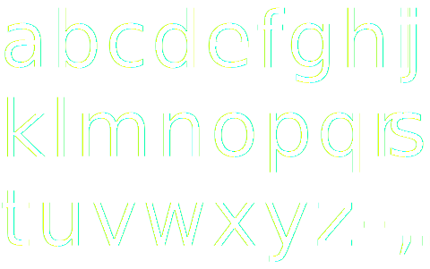

v.0.1.0
Download
License: SIL OFL 1.1

A stellar jet in the Carina Nebula ( by NASA, ESA, and the Hubble SM4 ERO Team )
Lake Powell and Grand Staircase-Escalante ( by NASA )
HTV-6 Cargo Craft Approaches Space Station ( by NASA )
Nighttime View of the Strait of Gibraltar ( by NASA )